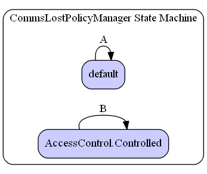

This file is part of the OpenJAUS HTML JAUS Reference.
Please support AS-4 JAUS and SAE by purchasing the corresponding Standard Document(s) from SAE International here.
|
This file is part of the OpenJAUS HTML JAUS Reference. |
||||||||||||||||||||||||||||||||||||||||||||||||||||||||||||||||||||||||||||||||||||||||||||||||||
| Home / Iop_v3ServiceSet / CommsLostPolicyManager | |||||||||||||||||||||||||||||||||||||||||||||||||||||||||||||||||||||||||||||||||||||||||||||||||||
| Inherits From: | ||||||||||||||||||||||||||||||||||||||||||||||||||||||||||||||||||||||||||||||||||||||||||||||||||||||
 urn:jaus:jss:core:AccessControl v1.1 urn:jaus:jss:core:AccessControl v1.1
|
||||||||||||||||||||||||||||||||||||||||||||||||||||||||||||||||||||||||||||||||||||||||||||||||||||||
|
urn:jaus:jss:core:Events v1.1
|
||||||||||||||||||||||||||||||||||||||||||||||||||||||||||||||||||||||||||||||||||||||||||||||||||||||
|
urn:jaus:jss:core:Transport v1.0
|
||||||||||||||||||||||||||||||||||||||||||||||||||||||||||||||||||||||||||||||||||||||||||||||||||||||
| Internal Event Set | |
|---|---|
| ID | Name |
8D10h |
CommsLost |
8D11h |
CommsRestored |
| Message Set | |
|---|---|
| Message ID | Name |
C402h |
QueryCommsLostCapabilities |
C403h |
QueryCommsLostConfiguration |
C404h |
QueryCommsLostStatus |
C412h |
ReportCommsLostCapabilities |
C413h |
ReportCommsLostConfiguration |
C414h |
ReportCommsLostStatus |
C401h |
SetCommsLostPolicy |
C411h |
SetCommsLostPolicyResponse |

| State Transitions | |||||||||||||||||||||||||||||||||||||||||||||||||||||||||||||||||||||||||||||||||||||||||||||||||||
|---|---|---|---|---|---|---|---|---|---|---|---|---|---|---|---|---|---|---|---|---|---|---|---|---|---|---|---|---|---|---|---|---|---|---|---|---|---|---|---|---|---|---|---|---|---|---|---|---|---|---|---|---|---|---|---|---|---|---|---|---|---|---|---|---|---|---|---|---|---|---|---|---|---|---|---|---|---|---|---|---|---|---|---|---|---|---|---|---|---|---|---|---|---|---|---|---|---|---|---|
| Label | Transition | Trigger | Conditional | Actions | |||||||||||||||||||||||||||||||||||||||||||||||||||||||||||||||||||||||||||||||||||||||||||||||
| B | CommsLostPolicyManagerControlledLoop | SetCommsLostPolicy | isControllingClient && isSupportedCommand |
sendSetCommsLostPolicyResponse , setCommsLostPolicy | |||||||||||||||||||||||||||||||||||||||||||||||||||||||||||||||||||||||||||||||||||||||||||||||
| SetCommsLostPolicy | isControllingClient && !isSupportedCommand |
sendSetCommsLostPolicyResponse | |||||||||||||||||||||||||||||||||||||||||||||||||||||||||||||||||||||||||||||||||||||||||||||||||
| A | CommsLostPolicyManagerDefaultLoop | QueryCommsLostCapabilities | |
sendReportCommsLostCapabilities | |||||||||||||||||||||||||||||||||||||||||||||||||||||||||||||||||||||||||||||||||||||||||||||||
| QueryCommsLostConfiguration | |
sendReportCommsLostConfiguration | |||||||||||||||||||||||||||||||||||||||||||||||||||||||||||||||||||||||||||||||||||||||||||||||||
| QueryCommsLostStatus | |
sendReportCommsLostStatus | |||||||||||||||||||||||||||||||||||||||||||||||||||||||||||||||||||||||||||||||||||||||||||||||||
| CommsLost | |
executeCommsLostPolicy | |||||||||||||||||||||||||||||||||||||||||||||||||||||||||||||||||||||||||||||||||||||||||||||||||
| CommsRestored | |
executeCommsRegainedPolicy | |||||||||||||||||||||||||||||||||||||||||||||||||||||||||||||||||||||||||||||||||||||||||||||||||
| Actions | |||
|---|---|---|---|
| Action Name | Type | Description | |
| executeCommsLostPolicy | Execute the configured comms-lost behavior. | ||
| executeCommsRegainedPolicy | Execute the configured comms-regained behavior. | ||
| sendReportCommsLostCapabilities | Send Action | Send a ReportCommsLostCapabilies message
Output Message: ReportCommsLostCapabilities |
|
| sendReportCommsLostConfiguration | Send Action | Send a ReportCommsLostConfiguration message
Output Message: ReportCommsLostConfiguration |
|
| sendReportCommsLostStatus | Send Action | Send a ReportCommsLostStatus message
Output Message: ReportCommsLostStatus |
|
| sendSetCommsLostPolicyResponse | Send Action | Send a SetCommsLostPolicyResponse message
Output Message: SetCommsLostPolicyResponse |
|
| setCommsLostPolicy | Set the specified policy as enabled. | ||
|
Copyright © SAE International. Reprinted with Permission. | ||||||||||||||||||||||||||||||||||||||||||||||||||||||||||||||||||||||||||||||||||||||||||||||||||
| Generated on 07/17/2019 from iop_v3.ojss | |||||||||||||||||||||||||||||||||||||||||||||||||||||||||||||||||||||||||||||||||||||||||||||||||||